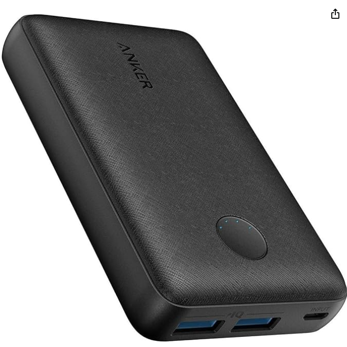
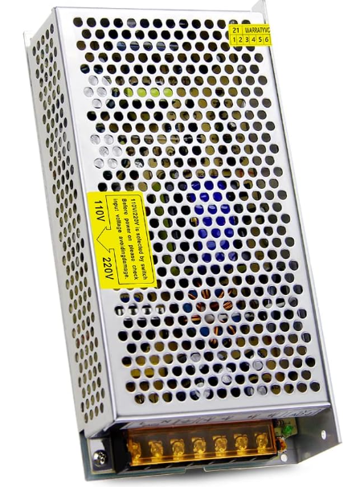

The electrical system for L.A.D. was designed to support the functionality necessary for machine vision, human-gesture replication, and user interaction. The primary components of the system were selected to ensure reliable operation, and cost-effectiveness.
A Raspberry Pi Camera was chosen to capture data from the outside environment. This camera provides the necessary input for the machine vision algorithms that interpret human gestures. The decision to use a Pi Camera was driven by its compatibility with the Raspberry Pi and its ability to deliver real-time data processing at a low cost.
The system includes 4 high-torque servos and 4 standard servos to actuate the robot's arms, enabling it to mimic human gestures. High-torque servos were used for their ability to handle the physical demands of “shoulder” arm movement, while standard servos were reserved for “elbow” arm movement which is a less demanding task. These servos are controlled via a servo hat, which provides Pulse Width Modulation signals to up to 16 servos simultaneously.
The robot features 8 individually addressable WS2812B LEDs, placed around the base of the neck and the eye of the robot. These LEDs were selected for their RGB functionality, low power consumption, and flexibility in design. Their ability to display various colors and patterns allows for dynamic and customizable user feedback.
A Raspberry Pi 4B serves as the central processing unit, running all the robot's code, including vision processing and servo control. Its versatility and compatibility with the servo hat, camera, and LEDs made it a natural choice for the project.
To power the system, two separate power supplies were used.
A dedicated power supply ensures stable operation of the processing unit and peripheral components. In order to reduce connections to external power supplies, we chose to use a lipo battery housed inside of the system. The battery is rechargeable and outputs at 5 volts, which is ideal for a Raspberry Pi.
The servos require high current due to their stall currents (2.7 A for high-torque servos and 2.5 A for standard servos). Since all servos are connected in parallel, the total current demand was calculated to be approximately 21.6 A. A 5V 20A 100W switching power supply was selected to meet this demand. Although slightly under the calculated requirement, it was deemed sufficient because the servos would not likely be stalled or actuated all simultaneously. This choice balanced cost, efficiency, and performance.
This site was created with the Nicepage